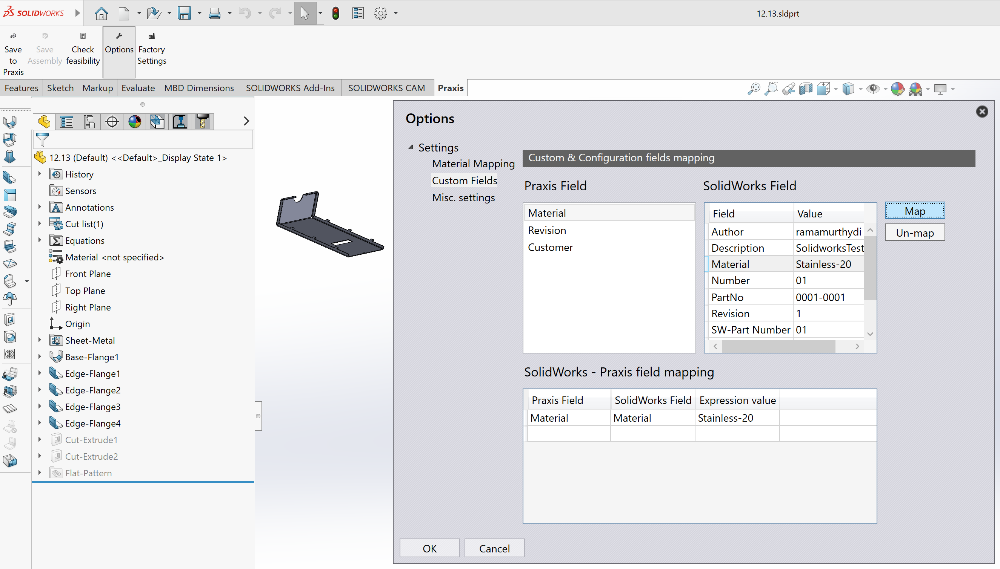

Salvare parti
Avviare SolidWorks e aprire una parte in lamiera (.sldprt).
Quindi seguire questi passaggi:
-
Passare alla scheda TruSmartCAM in SolidWorks per accedere alla barra degli strumenti TruSmartCAM.
-
Fare clic su Salva in Praxis sulla barra degli strumenti TruSmartCAM.
Nella finestra di dialogo Salva in Praxis, selezionare il materiale grezzo TruSmartCAM appropriato, quindi fare clic su OK per caricare e salvare la parte nella libreria parti TruSmartCAM.

La parte verrà ora salvata in TruSmartCAM.

TruSmartCAM include alcune parti di esempio situate in C:\Program
Files\Metamation\ TruSmartCAM \Samples\Parts. È possibile utilizzarle per scopi di test se
necessario.
|
Risoluzione automatica del materiale
Questa funzionalità converte automaticamente i materiali SolidWorks e i valori di spessore delle parti nei materiali grezzi TruSmartCAM corrispondenti durante il caricamento.
Per configurare la mappatura dei materiali:
-
Fare clic su Opzioni sulla barra degli strumenti TruSmartCAM per aprire la finestra di dialogo Opzioni.

-
Navigare alla pagina Mappatura materiali.
-
Nel riquadro sinistro, selezionare un materiale SolidWorks.
-
Nel riquadro destro, selezionare il materiale TruSmartCAM corrispondente.
-
Fare clic su Mappa per creare la mappatura.
-
La coppia mappata appare nell’elenco delle mappature in basso.
-
-
Per rimuovere una mappatura, selezionarla e fare clic su Annulla mappa.
Impostazione della tolleranza di spessore
Il valore di tolleranza di spessore definisce l’intervallo di tolleranza entro il quale TruSmartCAM abbina lo spessore del modello in lamiera da SolidWorks a uno spessore di materiale grezzo esistente nel database TruSmartCAM. Compensa le piccole variazioni nello spessore del modello causate da arrotondamenti di progettazione, conversioni di unità, ecc…
Quando lo spessore della parte SolidWorks non corrisponde esattamente a un materiale in TruSmartCAM, il valore di tolleranza garantisce che un materiale disponibile più vicino venga selezionato automaticamente.
Con un materiale nominale da 2,0 mm e un valore di tolleranza di 0,05 mm:
-
TruSmartCAM accetta qualsiasi spessore del modello SolidWorks compreso tra 1,95 mm e 2,05 mm come corrispondenza valida.
-
Le deviazioni oltre questo intervallo attiveranno una richiesta di selezione manuale del materiale durante il caricamento della parte.
Per visualizzare o modificare il valore di tolleranza:
-
Fare clic su Opzioni sulla barra degli strumenti TruSmartCAM e quindi navigare su Impostazioni varie per visualizzare il valore di tolleranza, quindi fare clic su Salva in Praxis.

-
Nella finestra di dialogo Salva in Praxis fare clic su OK, la parte verrà salvata in TruSmartCAM.

Lettura delle proprietà personalizzate delle parti
Questa impostazione consente a TruSmartCAM di leggere automaticamente le informazioni personalizzate delle parti—come Material, Revision e altri attributi definiti dall’utente—direttamente dai file delle parti SolidWorks.
Per configurarla:
-
Fare clic su Opzioni sulla barra degli strumenti TruSmartCAM per aprire la finestra di dialogo Opzioni e quindi navigare su Campi personalizzati.

-
Utilizzare i pulsanti Mappa e Annulla mappa per collegare i campi TruSmartCAM richiesti con i corrispondenti campi Custom o Configuration di SolidWorks.
| I valori visualizzati vengono caricati dalla parte SolidWorks attualmente attiva. |
-
Una volta completata la mappatura, le proprietà personalizzate selezionate verranno automaticamente lette da SolidWorks ogni volta che le parti vengono importate o aggiornate in TruSmartCAM, quindi fare clic su Salva in Praxis.
| Le mappature definite qui vengono salvate nel repository TruSmartCAM e automaticamente sincronizzate tra tutte le installazioni TruSmartCAM SolidWorks all’interno della rete. |
-
Nella finestra di dialogo Salva in Praxis fare clic su OK, la parte verrà salvata in TruSmartCAM.